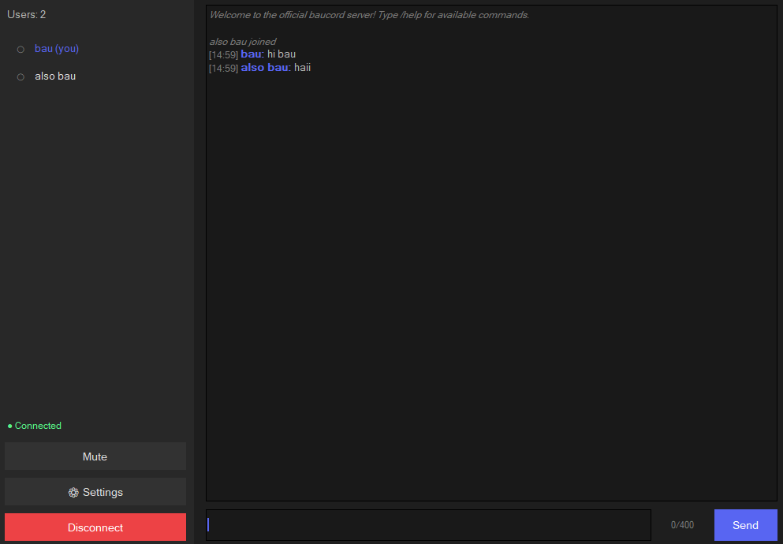

// interface
Minimal but functional
Clean native UI — no web overhead, just the essentials.

→ connect to any server

→ voice chat + text + per-user controls
Real-time voice & text chat. Ultra lightweight, low latency, no bloat. Just connect and talk.
No Electron. No web wrapper. Pure Rust with native FLTK UI.
Automatic voice detection — start talking and it transmits. No push-to-talk needed.
Ultra low latency audio using Opus codec with 10ms frames for responsive real-time voice chat.
Lighter than a browser tab. Native Rust binary with minimal resource footprint.
Built-in text messaging alongside voice. Simple, fast, always available.
Right-click any user to mute or adjust their volume individually. Full control over your mix.
Runs on Windows, Linux, and macOS. Same lightweight experience everywhere.
Audio config, VAD sensitivity, loopback — all saved between sessions automatically.
Run your own dedicated server. Your voice data, your infrastructure, your rules.
Clean native UI — no web overhead, just the essentials.

Pick your platform. Extract. Run. Connect.
Each zip contains baucord (client) and
dedicated-server.
Run the server, share the address, connect. That's it.